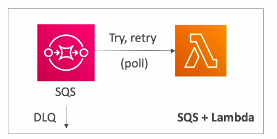
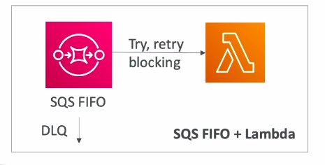
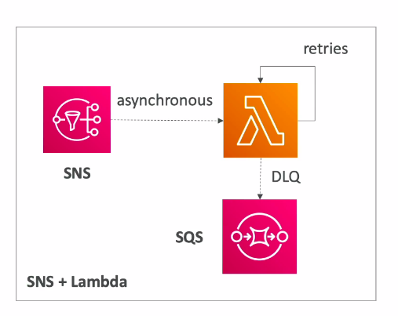
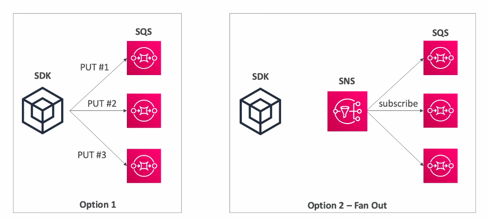
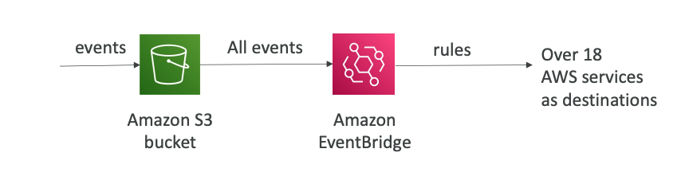
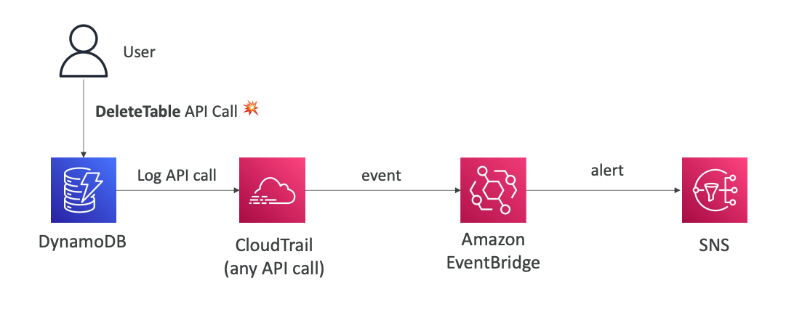
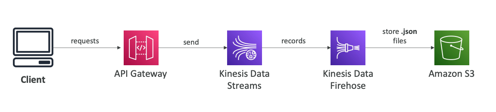

Bà i viết tổng hợp lại các kiến trúc thường được áp dụng cho hệ thống xá» lý sự kiện trên AWS.
🌿 Lambda, SNS and SQS
Có 3 kiến trúc thường được sá» dụng:
- SQS + Lambda 
- Events push và o SQS queue
- Lambda pull mess từ SQS vỠđể xỠlý, nếu xỠlý không thà nh công thì push ngược trở lại SQS.
- Tránh trường hợp message có vấn đề, mãi không được xá» lý thà nh công, gây ra vòng lặp vô hạn -> Chuyển message và o DLQ(Dead Letter Queue) sau số lần retry nhất định, không xá» lý nó nữa
- SQS FIFO + Lambda 
- Giống cái bên trên, khác là các messages trong Queue có thứ tự FIFO - First In First Out.
- SNS + Lambda 
- Notification đc gá»i bất đồng bộ tới Lambda để xá» lý.
- Luồng retry + đẩy và o DLQ giống 2 cái bên trên.
🌿 Fan Out Pattern - delivery to multi SQS

-
Fan Out Pattern: được sá» dụng với mục Ä‘Ãch phân phối thông điệp tới nhiá»u đối tượng cùng lúc.
-
Đảm bảo tÃnh đúng đắn và tin cáºy của các thông điệp.
-
Tăng khả năng chịu lỗi.
-
Có khả năng mở rộng linh hoạt.
-
Sá» dụng SNS - SNS hỗ trợ nhiá»u định dạng như email, tin nhắn, văn bản, … Tùy nhu cầu chúng ta có thể lựa chá»n 2 options trên.
-
Option1:
- Cơ chế sẽ là một message sẽ được put lần lượt tới các Queue
- Nhưng có thể xảy ra trường hợp put Queue2, message bị lỗi, thế là nó ko put đến Queue3 nữa -> Không đáng tin cáºy
-
Option2:
- Tăng cường độ tin cáºy bằng cách thông qua SNS, kiêu gì nó cũng gá»i message lên cả 3 Queue.
🌿 Events of S3
🃠With EventBridge

- Filter Advance - có thể tạo JSON rules, hỗ trợ cho việc tìm kiếm các thông tin của objects(metadata, size, …)
- Multiple Destinations - Có thể gá»i các event tới nhiá»u AWS services khác, dễ dà ng xá» lý nhiá»u tác vụ theo nhu cầu sá» dụng của hệ thống.
- Capabilities - Ngoà i ra EventBridge hỗ trợ lưu trữ, replay event, reliable delivery

- Ngoà i ra nó còn được sá» dụng để nháºn các events từ các API được call. Từ đó có thể gá»i tới các service khác và dụ như SNS trong trường hợp khi người dùng xoá một bảng sẽ gá»i mail tới tất cả các AWS accounts trong organization.
🃠With API Gateway

- Mô hình thường được sá» dụng để người dùng có thể lưu dữ liệu lên S3.